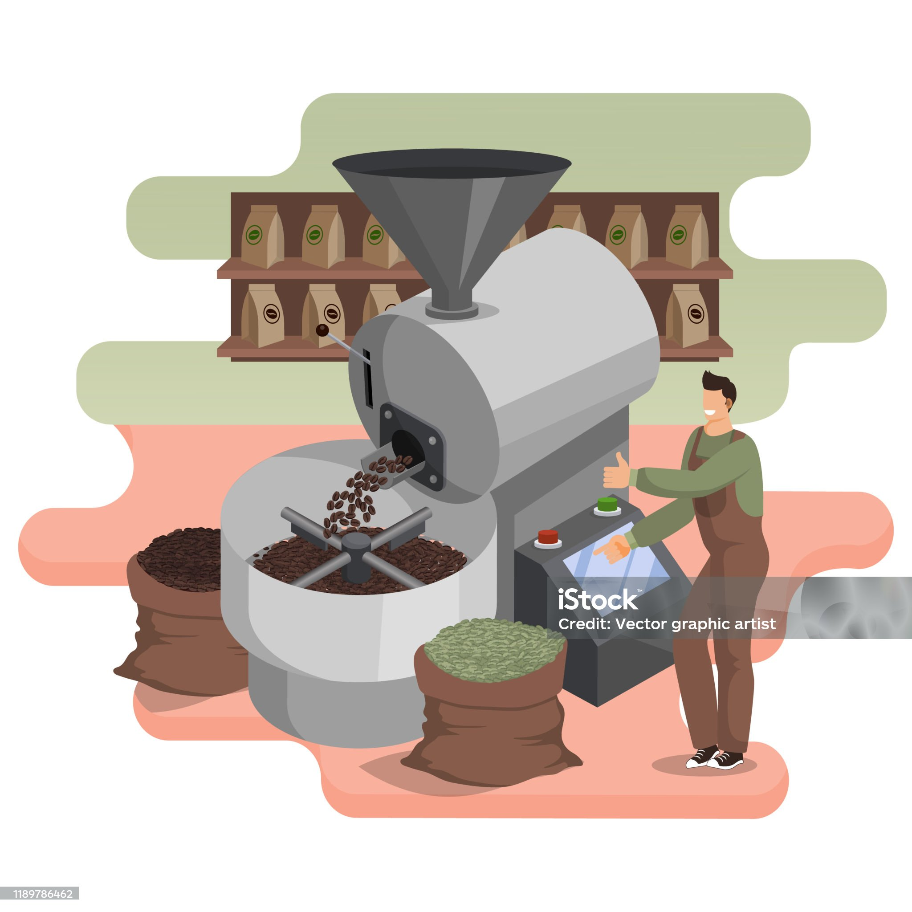
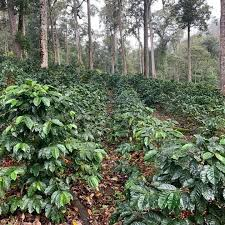
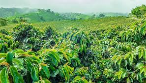
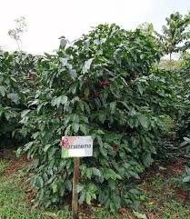
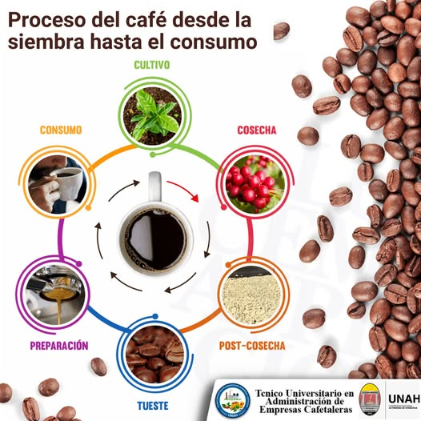
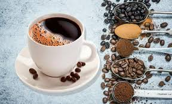
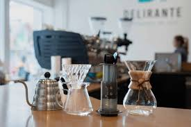
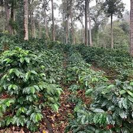
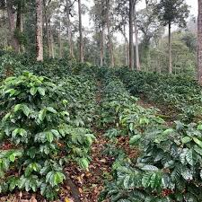

Ubicados en El Paraíso, Honduras, nos especializamos en el tostado industrial de café y su venta al por mayor y menor. Trabajamos con productores locales y garantizamos calidad desde el origen.
Trillado
Tostado
Molido
Empacado

Servicios
Desde la recolección del grano hasta el tueste, el café vive un viaje mágico. Estas son algunas etapas clave:
Despulpado y lavado
Secado al sol
Clasificación y selección
Tostado según perfil

Tipos de café
Conoce las principales variedades que cultivamos:
Arábica: delicado, floral y suave.
Robusta: intenso y con más cafeína.
Caturra: variedad arábica adaptada al clima local.


Ciclo de vida del café
El café requiere cuidado constante. El ciclo incluye:
Germinación (1-2 meses)
Crecimiento vegetativo (4-6 meses)
Floración
Fructificación
Cosecha (9-12 meses después de floración)

Cómo preparar una buena taza de café
Sigue estos pasos para disfrutar al máximo tu café:
Usa agua caliente pero no hirviendo (92–96°C).
Muele tu café fresco antes de preparar.
La proporción ideal es 1:15 (1g café por 15g de agua).
Prueba métodos como prensa francesa, V60 o cafetera italiana.


Contacto
¿Deseas comprar nuestro café o tostar el tuyo con nosotros?

 
